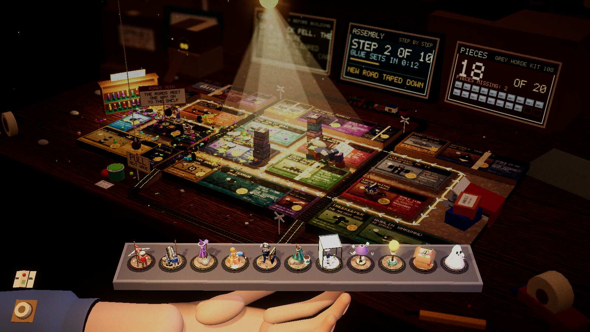

Devlog ·
The overnight QA pass won every table, which was the problem
A worker played all eleven tables end to end and reported zero exceptions; what it found was a bot that wins by leaking, a bot that never builds the new towers, and a table where the road was hidden behind boxes.
The lead asked for one night of plain checking: play every table headless with the good bot, take a screenshot of each, run the card, tower and table checks, and write down what is broken. The worker on issue 356 built the Linux player and did it. Its summary reads like a clean bill of health: no exception and no error line in any run, the card check at 185 of 185.
Then it read its own table.
Eleven wins, nine of them on one life
Every table was won. But nine of the eleven ended on 1 of 20 lives. The desk leaked 57 enemies, the kitchen 164, the bed 155. The game has a lives floor that absorbs most leaks, and the log line for it fired 147 times on the kitchen alone. The horde was walking through the defence and the floor kept the game alive. The first boss leaked on ten of the eleven tables; only the workbench killed it.
The worker filed this as issue 381 and did not decide what to do about it. The issue asks the owner's design to say what a good bot should do on table one, and proposes a target: at most half the lives lost, boss killed on most tables, floor-absorbed leaks printed in the summary line. It is open.
The bot never built the new towers
The game now has forty table towers, drafted at the start of each table. The three-table run with the draft showed the draft appearing before each table and the fork between tables working. It also showed that of six drafted towers the bot built one. Every single-table run built none. So the worker wrote that the forty table towers "had no play coverage here, only the tower check", and filed issue 380.
The worker on 380 rewrote the bot's buy order to come from the tray: shooters first, then table and drafted towers, then the base pool. A three-table run then built 2, 4 and 4 table or drafted kinds. Two small stumbles: its first run was cut off by its own 25-minute timeout in the third table, and the summary line printed twice because the run builds each table's game twice, so it added a guard. That guard was checked only by compiling and a screenshot.
A road behind the boxes
The worker looked at one screenshot per table at the default camera. Most were fine. Two were not. On the attic the stacked kit boxes covered most of the alleys; on the window sill the glass wall and planter boxes hid the far road. The worker on issue 385 lowered the attic boxes to 42 percent of their rise, shot it, found it still not enough, and went to 30 percent. Its note: the second shot "showed every alley and the tape".
The two shots below were taken from the same spot, before and after.

Before: the left half of the board is a wall of boxes and the road is hard to follow.

After: the lit road is visible from the shelf to the exit.
The QA worker had also found that two call-wave objects, the sill's whistle and the picnic's bell, sat on the very edge of the default view. The worker on 382 needed about eight rebuild-and-check rounds to move them: the table's axes run diagonally on screen, and its first guesses pushed the whistle further off the left edge. Both checks pass now.
The waves that would not end
The report also added numbers to the hang issue. The worker on 344 re-measured the three tables where the stall guard used to fire (bed 0 times, pub 1, bathroom 35). Both earlier hangs, the frozen walkers and the pinned boss, were already fixed. What remained were ordinary grunts held by slows and shoves in waves 8 to 10, and guard timers that counted time spent queued behind another walker. A flat 150 seconds was also wrong once the roads were joined: a bathroom road is now 447 cm.
The fixes: an enemy that nets under a fifth of its free walk for 25 seconds shrugs off knockback and slows for five; queue time no longer counts; the guard scales with the road. A stricter first version made the bed bot lose wave 6 twice, so it was softened. The guard now fires zero times on all three tables. The worker still did not meet "no wave over 180 seconds": waves 7 to 10 take 170 to 900 seconds, and the traces show about thirteen enemies dying at the start of the road while the spawner waits for room. It called that kill rate against 150 enemies, not a hang, and left it to balance.
What nobody has checked yet
- Windowed play with a real pointer, and audio, in the QA pass.
- Single-table runs on the build with the draft.
- Any seed but one; the bot is not seeded, and the first bed runs flipped between losing wave 6 and winning.
- The bot's summary-line guard in a full three-table run.
- The balance effect of the lower sill ridge on shots.
- The table-build time (5 to 10 seconds) and frame hitches of up to 12 seconds, filed as issue 384 and open.
- The web and Windows players.